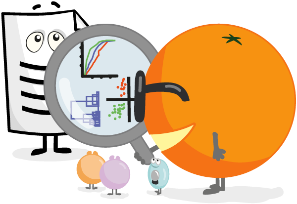

My Story

I am Dhayanandhan from Vellore. I have completed my Bachelor degree in Computer Application in VIT University Vellore and Now i'm currently Pursuing Master in computer Application in VIT University. I'm a Creative and Goal oriented person. My intrested areas are Problem Solving in Realtime problem, Software Developing and Back-End Developing for Realtime project. Passionate about Learing and hungry to learn a new Technology and implement in project. I have Basic Knowledge in Internet Of Things(IOT), Data Analytics and Front-End Development.
Languages
My favorite languages for systems programming and software engineering.
Front-End
My preferred technologies for front-end web development and component design.
Back-End
My preferred technologies for back-end web programming and database architecture.
Tools
My favorite tools for version control, code editing, and container orchestration.